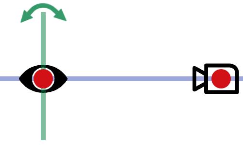
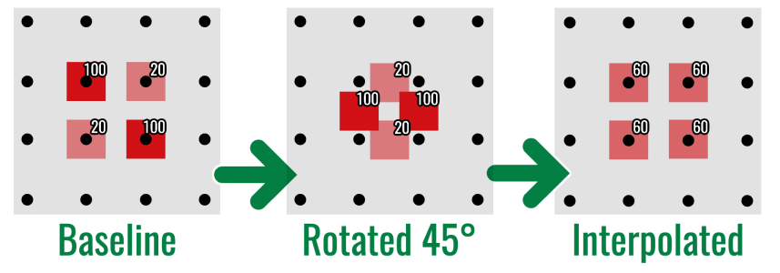
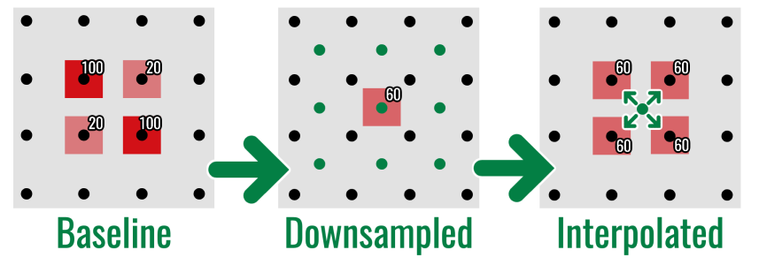
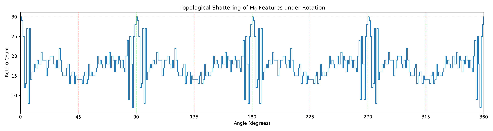
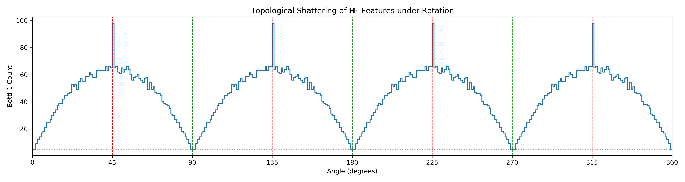
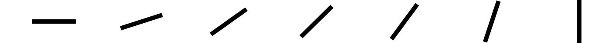
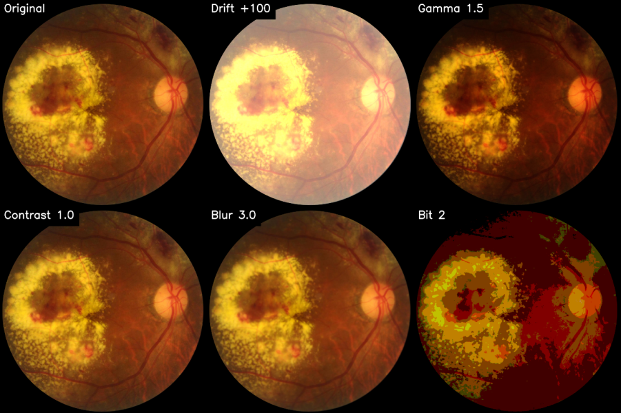
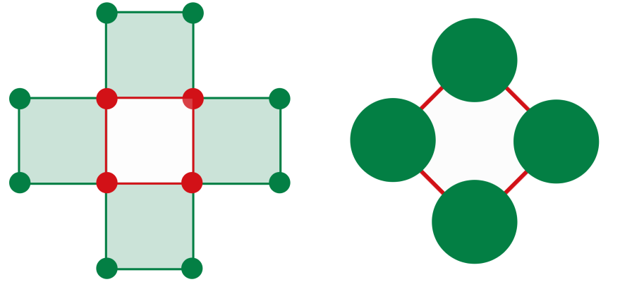
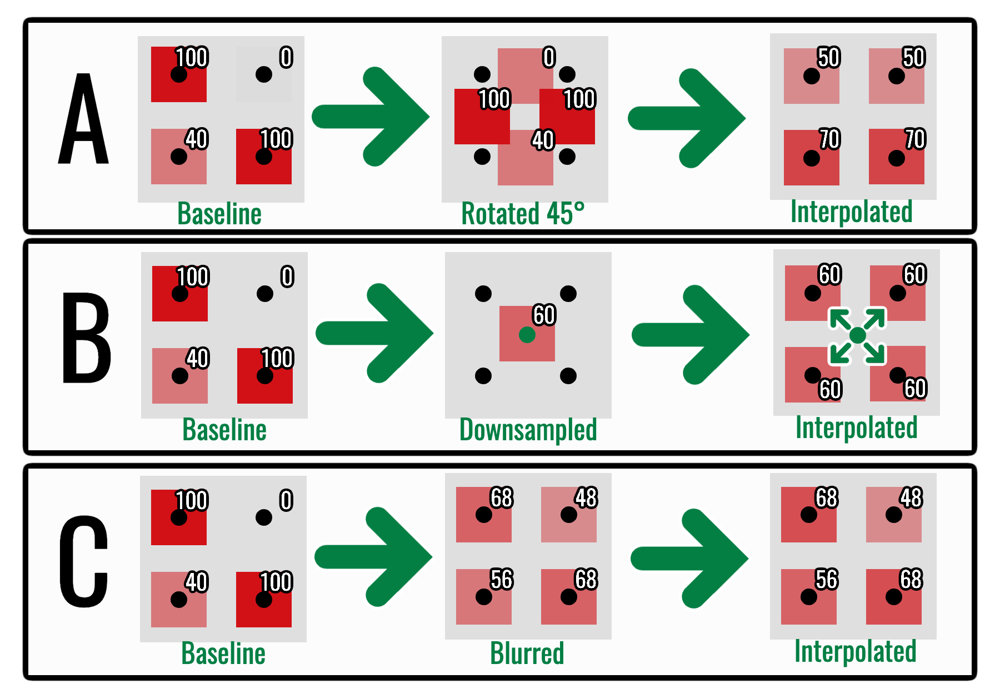

Computational Stability on Digital Images
Separating mechanical and radiometric error
The algebraic stability theorem controls topology by \(\lVert I-J\rVert_\infty\). In digital imaging, the crucial question is how a physical acquisition error produces that intensity difference.
The thesis models acquisition in two stages, called Aim-and-Shoot: the image is first aligned spatially with the sensor, after which its intensity is measured.

The preceding stability theorem starts with the number \(\|I-I_{\mathrm{obs}}\|_\infty\). It does not explain where that number comes from. The acquisition model bounds it using three quantities:
| Symbol | Meaning | Units |
|---|---|---|
| \(\lambda\) | largest spatial displacement | pixels |
| \(L_I\) | largest intensity jump per adjacency step | intensity levels per pixel step |
| \(\varepsilon_{\mathrm{rad}}\) | largest radiometric change | intensity levels |
Their combination \(\lceil\lambda\rceil L_I+\varepsilon_{\mathrm{rad}}\) has intensity units and can therefore bound the input sup norm. The model is deliberately worst-case: it supplies an operational safety envelope, not a prediction of the average pixel error.
1 The sampled-image problem
An ideal rotation preserves Euclidean distance. On a continuous domain it is an isometry. A pixel array, however, is tied to \(\mathbb Z^2\). Rotating by an angle other than a multiple of \(90^\circ\) moves samples off-grid, forcing an interpolation rule.
Interpolation can:
- merge nearby components;
- fill narrow holes;
- fragment thin structures; and
- introduce new intermediate intensities.
The physical displacement may be small while the discrete topological change is large.

Resolution reduction produces the same kind of information loss by a different spatial mechanism: several fine samples are replaced by one coarse measurement.

These toy arrays expose the intensity mixing directly. The next two plots show its topological consequence on a rotating shape: the resampled complex can gain or lose components and loops even though the underlying continuous rotation preserves topology.

The two homological dimensions need not fail identically. The first plot counts fragmentation and merging through (_0); the second counts the creation and destruction of loops through (_1).

Proposition 1 (Discrete invariance under grid-aligned isometries) Let \(T\) be a bijection of the pixel grid that preserves cubical face relations and filtration values up to relabelling. Then the original and transformed filtered complexes are isomorphic, their persistence modules are isomorphic, and
\[ d_B(\operatorname{Dgm}(I),\operatorname{Dgm}(T I))=0. \]
Proof. At every threshold, \(T\) gives a cubical isomorphism between the two sublevel complexes. These isomorphisms commute with the filtration inclusions, so they form an isomorphism of persistence modules. Isomorphic modules have identical barcodes, whose bottleneck distance is zero.
Translations by whole pixels and rotations through multiples of \(90^\circ\) are grid-aligned when boundary handling is compatible. An oblique rotation is an isometry of \(\mathbb R^2\) but not an automorphism of \(\mathbb Z^2\). This failure of the continuous transformation to commute with sampling is the discretisation gap.

There is no contradiction between this visual stability and the preceding low-resolution failures. The continuous theorem concerns the underlying rotation; the sampled result depends additionally on grid spacing, interpolation, and feature thickness.
2 Image and acquisition operators
Let
\[ I:\Omega\to[0,M] \]
be an intensity function on a finite grid \(\Omega\subset\mathbb Z^2\).
Model the observed image as
\[ I_{\mathrm{obs}}=T_S(T_A I), \]
where:
- \(T_A\) is the aim operator, representing alignment, rotation, scale, focus, and resampling;
- \(T_S\) is the shoot operator, representing exposure, sensor response, quantisation, and noise.
The notation \(T_A I\) means “apply the operation \(T_A\) to the whole image \(I\).” It is another image on the output grid, not ordinary multiplication. Similarly, \(T_S(T_AI)\) applies the sensor-stage operation to the already aligned image.
The order is causal:
\[ I_{\mathrm{obs}}=T_S\circ T_A(I). \]
The scene must first be aligned with the sensor, after which the sensor records and corrupts the aligned light field. The thesis groups the perturbations as follows:
| Stage | Perturbation | Mathematical model |
|---|---|---|
| Aim | in-plane rotation | \(x\mapsto R_\theta x\) followed by interpolation |
| Aim | change of scale or resolution | \(x\mapsto\lambda x\) and resampling |
| Aim | optical defocus | convolution \(I\mapsto I*K\) |
| Shoot | response or contrast change | pointwise transfer function \(\rho(I)\) |
| Shoot | illumination drift or electronic noise | additive perturbation \(\eta\) |
| Shoot | bit-depth reduction | quantisation \(Q(I)\) |
The classification is mechanistic rather than visual. Blur changes intensity values, but it belongs to the Aim stage because it mixes spatial neighbours. Illumination drift can also change every intensity, but it belongs to the Shoot stage because it does not geometrically resample the grid.

The figure is a catalogue of outputs, not yet a bound. To obtain a bound we must first choose the adjacency relation used to measure spatial intensity change, and then separate the Aim and Shoot contributions by the triangle inequality.
2.1 Why the Moore graph appears
Treating pixels as closed squares means diagonally touching pixels share a vertex. For cubical \(H_1\), that shared vertex can participate in a continuous edge cycle. A four-neighbour pixel graph would remove the diagonal relationship and can destroy a loop that exists in the cubical complex. The thesis therefore measures local intensity changes on the Moore eight-neighbour graph
\[ G_\infty=(\Omega,E_\infty), \qquad xy\in E_\infty\iff\|x-y\|_\infty=1. \]

Lemma 1 (Acquisition-error decomposition) The triangle inequality gives
\[ \lVert I-I_{\mathrm{obs}}\rVert_\infty \leq \underbrace{\lVert I-T_A I\rVert_\infty}_{\text{mechanical}} + \underbrace{\lVert T_A I-T_S(T_A I)\rVert_\infty}_{\text{radiometric}}. \]
This separates two physically different sources of error.
Proof. Insert and subtract the intermediate image \(T_AI\):
\[ I-I_{\mathrm{obs}} =(I-T_AI)+(T_AI-T_S(T_AI)). \]
Apply the triangle inequality for the supremum norm.
3 Radiometric error
Suppose the sensor perturbation is uniformly bounded:
\[ \lVert J-T_SJ\rVert_\infty\leq\varepsilon_{\mathrm{rad}} \]
for images \(J\) inside the standard operating range. Then
\[ \lVert T_A I-T_S(T_A I)\rVert_\infty \leq \varepsilon_{\mathrm{rad}}. \]
Standardising illumination, exposure, calibration, and dynamic range makes this term interpretable.
More generally, model the sensor as
\[ T_S(J)=\rho(J)+\eta, \]
where \(\rho\) is a deterministic response function and \(\eta\) is an additive error field.
Proposition 2 (Radiometric stability) For an aligned image \(J\),
\[ d_B\bigl(\operatorname{Dgm}(J),\operatorname{Dgm}(T_SJ)\bigr) \leq \|J-\rho(J)\|_\infty+\|\eta\|_\infty. \]
Proof. Algebraic stability gives
\[ d_B\bigl(\operatorname{Dgm}(J),\operatorname{Dgm}(T_SJ)\bigr) \leq\|J-\rho(J)-\eta\|_\infty. \]
Apply the triangle inequality for the supremum norm.
Protocol standardisation is intended to keep \(\rho\) close to the identity and to bound \(\|\eta\|_\infty\) by a calibrated sensor noise floor. It does not make radiometric error vanish; it makes the error term measurable before the topological analysis.
| Distortion | Model | Supremum-norm control |
|---|---|---|
| gamma response | \(\rho(v)=255(v/255)^\gamma\) | \(\max_v|v-\rho(v)|\) |
| contrast | \(\rho(v)=\alpha(v-127.5)+127.5\) | \(127.5|1-\alpha|\) before clipping |
| uniform drift | \(\eta(x)=\delta\) | \(|\delta|\) |
| Gaussian or Poisson noise | stochastic \(\eta\) | realised value \(\|\eta\|_\infty\) |
| salt-and-pepper noise | impulses to \(0\) or \(255\) | up to \(255\) |
| bit-depth reduction | quantisation | one quantisation step |
3.1 Quantisation
Proposition 3 (Nearest-level quantisation bound) For a uniform quantiser \(Q\) with step size \(q\) and rounding to the nearest level,
\[ \lVert I-Q(I)\rVert_\infty\leq\frac q2. \]
The persistence diagram therefore moves by at most \(q/2\). If no persistence feature lies close enough to a decision threshold, moderate quantisation can produce a visible stability plateau—the terrace effect observed in the thesis experiments.
Proof. Every real intensity lies within half a quantisation step of its nearest level, so \(|I(x)-Q(I)(x)|\leq q/2\) for every sample \(x\). Taking the maximum gives the supremum-norm bound. Applying sublevel-set stability gives the same upper bound on bottleneck distance.
Corollary 1 (Persistence threshold for quantisation survival) If quantisation moves a persistence diagram by at most \(\Delta\) and a feature has persistence \(p>2\Delta\), that feature cannot be matched to the diagonal. It must survive as an off-diagonal feature after quantisation.
Proof. The \(\ell_\infty\) distance from \((b,d)\) to the diagonal is
\[ \inf_x\max\{|b-x|,|d-x|\} =\frac{d-b}{2} =\frac p2. \]
If \(p>2\Delta\), then \(p/2>\Delta\). A matching of cost at most \(\Delta\) cannot send the point to the diagonal.
This gives the thesis’s terrace effect a mathematical interpretation. Progressive bit-depth reduction need not cause gradual deterioration. Features with persistence above \(2\Delta\) are protected until the quantisation step crosses their persistence scale, after which performance may drop abruptly.
4 Mechanical error
Choose an adjacency graph on \(\Omega\) and define the discrete image gradient
\[ L_I= \max_{\{x,y\}\in E}|I(x)-I(y)|. \]
Suppose every grid value used to construct an aligned output sample lies within graph distance \(\lceil\lambda\rceil\) of the corresponding source location. A path between them then requires at most \(\lceil\lambda\rceil\) adjacency steps. This formulation includes an integer-valued displacement and, in the interpolation case, the entire local resampling stencil.
We first prove the estimate for a displacement that lands on another grid vertex. The following subsection then explains why a convex interpolation of nearby grid values obeys the same local bound. Separating these cases avoids silently treating an off-grid coordinate as though it were already a pixel.
Lemma 2 (Geometric stability via graph paths) Under this graph-distance assumption, the resulting mechanical error satisfies
\[ \lVert I-T_A I\rVert_\infty \leq \lceil\lambda\rceil L_I. \]
Proof. For a grid-valued displaced sample \(T_Ax\), choose a shortest graph path \(x=x_0,x_1,\ldots,x_m=T_Ax\), where \(m\leq\lceil\lambda\rceil\). Then
\[ |I(x)-I(T_Ax)| \leq\sum_{j=0}^{m-1}|I(x_j)-I(x_{j+1})| \leq mL_I \leq\lceil\lambda\rceil L_I. \]
Taking the maximum over \(x\) proves the supremum-norm bound.
4.1 Bilinear interpolation and the local bound
An off-grid coordinate \(x'=(x_0+u,y_0+v)\) with \(u,v\in[0,1]\) is evaluated by the convex combination
\[ \begin{aligned} I(x')={}&(1-u)(1-v)I(x_0,y_0) +u(1-v)I(x_0+1,y_0)\\ &+(1-u)vI(x_0,y_0+1) +uvI(x_0+1,y_0+1), \end{aligned} \]
followed, for integer-valued images, by rounding. All coefficients are nonnegative and sum to one, so interpolation cannot leave the interval between the smallest and largest of the four neighbouring intensities.
Consequently, if every interpolation vertex lies within Moore-graph distance \(\lceil\lambda\rceil\) of the corresponding source location, its intensity differs from the source by at most \(\lceil\lambda\rceil L_I\). Convexity gives the same bound for their bilinear average. This supplies the interpolation-aware justification for Lemma 2 rather than treating \(T_Ax\) as necessarily lying on the lattice.

4.2 Global versus local displacement
For a rotation about the image centre, displacement grows with distance from the centre. At radius \(R\), a useful approximation is
\[ \lambda_{\max}\approx 2R\sin\left(\frac{|\theta|}{2}\right), \]
which is approximately \(R|\theta|\) for small angles measured in radians. Thus a visually small angular error can create a large global displacement at the edge of a high-resolution image. The supremum bound is deliberately conservative: it records the worst affected pixel, not the typical pixel.
The bound is also local in the perturbative sense. A large grid-aligned \(90^\circ\) rotation may have a large coordinate displacement but zero topological error by Proposition 1. The quantity \(\lceil\lambda\rceil L_I\) is intended for unintended, interpolation-heavy misalignment near the acquisition baseline, not as an exact formula for every geometric transformation.
The same motion has different consequences for different images:
- if \(L_I\) is small, intensities vary slowly and interpolation is mild;
- if \(L_I\) is large, thin high-contrast structures can shatter or merge.
This is why “rotation by one degree” is not a complete description of topological risk.
5 The computational stability bound
All the preceding estimates now enter one chain:
\[ \text{physical perturbation} \longrightarrow \text{sup-norm image error} \longrightarrow \text{bottleneck diagram error}. \]
Theorem 1 (Computational stability bound) Assume the radiometric error is at most \(\varepsilon_{\mathrm{rad}}\) and every grid value used by the aim operator lies within graph distance \(\lceil\lambda\rceil\) of its corresponding source location. Then
\[ \lVert I-I_{\mathrm{obs}}\rVert_\infty \leq \lceil\lambda\rceil L_I+\varepsilon_{\mathrm{rad}}. \]
Applying algebraic stability yields
\[ \boxed{ d_B\bigl( \operatorname{Dgm}(I), \operatorname{Dgm}(I_{\mathrm{obs}}) \bigr) \leq \lceil\lambda\rceil L_I+\varepsilon_{\mathrm{rad}} } \]
Proof. By Lemma 1 and Lemma 2,
\[ \lVert I-I_{\mathrm{obs}}\rVert_\infty \leq \lceil\lambda\rceil L_I+\varepsilon_{\mathrm{rad}}. \]
Apply the sublevel-set stability theorem to \(I\) and \(I_{\mathrm{obs}}\).
The bound identifies three levers:
- reduce displacement \(\lambda\) through alignment;
- reduce effective gradient \(L_I\) through resolution and optical control; or
- reduce radiometric error \(\varepsilon_{\mathrm{rad}}\) through standardisation.
6 Stable vectorisation
Corollary 2 (Stability after vectorisation) If a diagram vectorisation \(\Phi\) is \(L_\Phi\)-Lipschitz, then
\[ \lVert \Phi(\operatorname{Dgm}I) - \Phi(\operatorname{Dgm}I_{\mathrm{obs}}) \rVert_2 \leq L_\Phi \left( \lceil\lambda\rceil L_I+\varepsilon_{\mathrm{rad}} \right). \]
Proof. Apply the Lipschitz inequality for \(\Phi\) to the two persistence diagrams, then substitute the bound from Theorem 1.
The vectorisation constant can amplify the acquisition error. Coarse summaries may discard information, but they can also provide a smaller and more interpretable operational sensitivity.
7 Failure modes suggested by the bound
| Failure mode | Mathematical mechanism | Possible control |
|---|---|---|
| Off-grid rotation | interpolation across large \(L_I\) | registration or grid-aware augmentation |
| Defocus blur | spatial averaging closes narrow gaps | focus quality control |
| Downsampling | reduced resolution aliases small features | validated operating resolution |
| Illumination drift | increased \(\varepsilon_{\mathrm{rad}}\) | capture standardisation |
| Quantisation | bounded rounding error | preserve sufficient bit depth |
| Compression | artificial local gradients | lossless image formats |
The bound is conservative. Its purpose is not to predict the exact barcode but to expose which physical quantities control worst-case change.
- Algebraic stability begins after two images on a common grid are available.
- Sampling and interpolation determine whether a small physical motion becomes a small image-space perturbation.
- Mechanical error couples displacement with local image gradient.
- Radiometric error changes intensities without moving the sampling geometry.
- A valid downstream vectorisation contributes its own Lipschitz factor.
The next chapter uses these separate mechanisms to design complementary diagnostic probes.
8 Exercises
- Evaluate the bound for \(\lambda=1.2\), \(L_I=20\), and \(\varepsilon_{\mathrm{rad}}=5\).
- Explain why a smooth image and a sharp binary image respond differently to the same interpolation.
- Derive the quantisation bound for nearest-level rounding.
- Which term is most directly reduced by better camera alignment?
- How does a Lipschitz vectorisation change the final bound?
Previous: Stability · Course contents · Next: Reliability Engineering